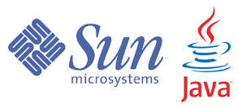

Web Server
The most leading web servers available today are :
- Internet Information Services (IIS)
- Lighttpd
- Apache HTTP Server
- Sun Java System Web Server
- Jigsaw Server
IIS Web Server
A Microsoft product, IIS is a server that offers all the features such as Apache. Since it’s not an open source, adding personal modules as well as modifying becomes a bit difficult. It supports all the platforms that run Windows operating system. Additionally, you also get good customer support, if there is any issue.
Apache HTTP Server
It is the most popular web server available and is widely used. It is developed and maintained by Apache Software Foundation. The Software is produced under the Apache Licence, which makes it free and open source. It is available for a variety of operating Systems- Windows, Mac OS X, Unix, Linux, Solaris, Novell Netware and FreeBSD.

Sun Java System Web Server
A web server from Sun Microsystems that is suited for medium and large web sites. Though the server is free it is not open source. It however, runs on Windows, Linux and UNIX platforms. The Sun Java System web server supports various languages, scripts and technologies required for Web 2.0 such as JSP, Java Servlets, PHP, Perl, Python, and Ruby on Rails, ASP and Coldfusion etc.
JigSaw Server
Jigsaw (W3C's Server) comes from the World Wide Web Consortium. It is open source and free and can run on various platforms like Linux, UNIX, Windows, and Mac OS X Free BSD etc. Jigsaw has been written in Java and can run CGI scripts and PHP programs.
Nginx Web Server
Nginx is the next open source web server after Apache. It comprises of IMAP/POP3 proxy server. The significant features offered by Nginx are high performance, stability, simple configuration and low resource usage.